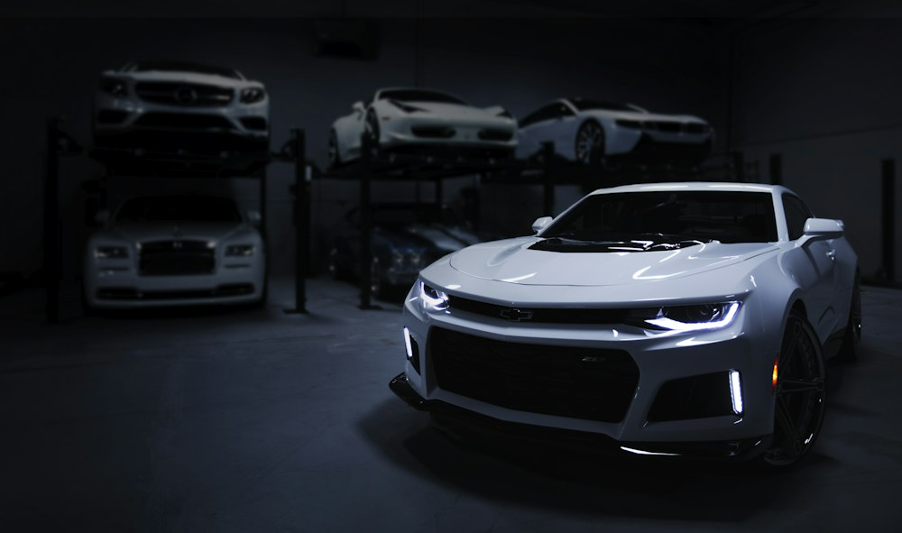

O mundo das corridas de rua faz parte de uma cultura automotiva que reúne carros preparados, motores potentes, personalização, encontros de apaixonados por automóveis e competições.
Existem vários estilos de carros, desde esportivos japoneses até muscle cars americanos. Cada projeto tem suas próprias características, como rodas, pintura, suspensão, motor e acabamento.
Neste site você vai conhecer os carros, o drift, as corridas de arrancada, o tuning e os eventos automotivos realizados em locais autorizados.
| Estilo | Características | Origem associada |
|---|---|---|
| JDM | Esportivos japoneses e personalização | Japão |
| Muscle car | Carros americanos com motores potentes | Estados Unidos |
| Street tuning | Visual personalizado | Diversas culturas |
| Supercarros | Alto desempenho e tecnologia | Diversos países |
| Drift | Carros preparados para deslizar em curvas | Popularizado no Japão |
As corridas devem acontecer em pistas fechadas ou eventos autorizados, com equipamentos de segurança e organização adequada. A rua é um espaço compartilhado, por isso não deve ser usada para disputar velocidade entre veículos.